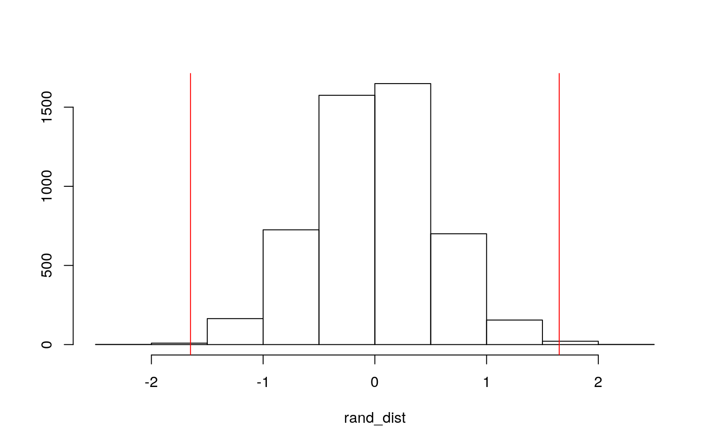
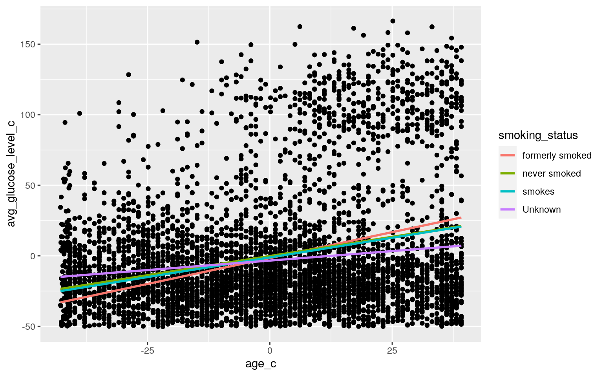
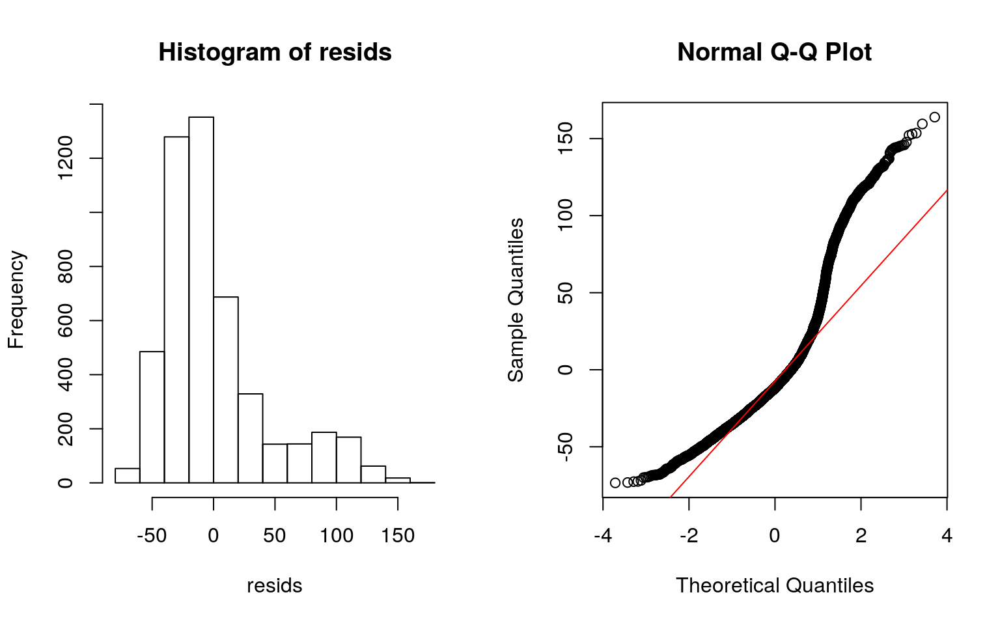
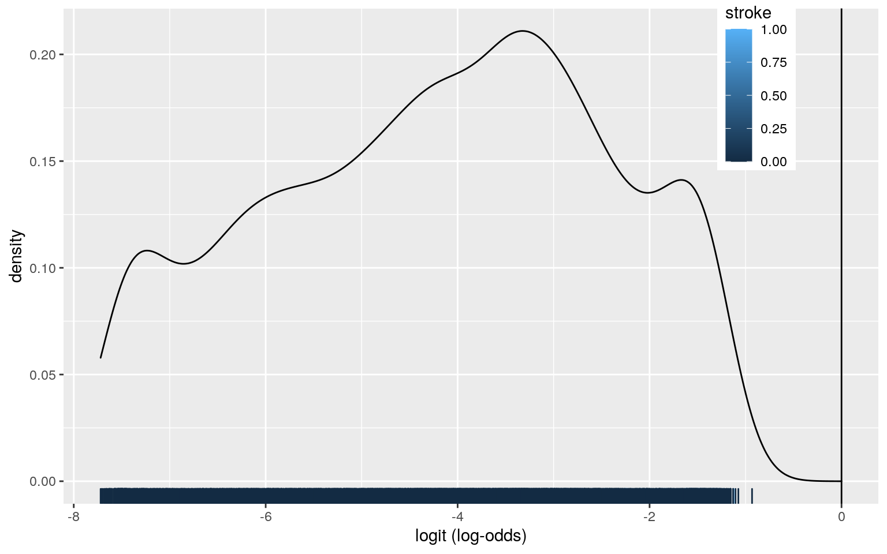
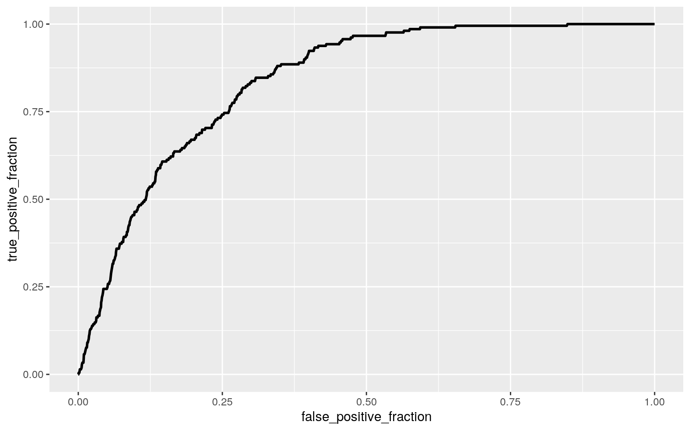

This project analyzes the “Stroke prediction dataset” provided by data scientist Federico Soriano. The dataset compiles 10 clinical features that may be associated with stroke for 5110 anonymized patients. As stroke is the 2nd leading cause of death worldwide and accounts for about 11% of deaths, analyzing this dataset for any possible associations could help improve clinical outcomes for this medical emergency. Since I’m a neuroscience major, finding how this neurological disease is affected by other clinical factors is also inherently interesting.
The dataset has 5110 observations, each observation being a patient. There are 12 variables, one for the anonymized patient ID, and one a binary variable for a stroke event occuring. The other 10 variables are: gender (Male, Female, Other), age (years), hypertension (binary), heart_disease (binary), ever_married (Yes, No), work_type (children, govt_job, never_worked, private, self-employed), residence_type (rural, urban), avg_glucose_level, bmi, and smoking_status (formerly smoked, never smoked, smokes, unknown).
library("tidyverse")
library(dplyr)
library(rstatix)
library(modelr)
library(tidyverse)
library(gridExtra)
library(sandwich)
library(lmtest)
stroke <- read.csv("~/SDS_348/healthcare-dataset-stroke-data.csv", na.strings = c("N/A"))
stroke <- stroke %>% na.omit
head(stroke)## id gender age hypertension heart_disease ever_married
work_type Residence_type
## 1 9046 Male 67 0 1 Yes Private Urban
## 3 31112 Male 80 0 1 Yes Private Rural
## 4 60182 Female 49 0 0 Yes Private Urban
## 5 1665 Female 79 1 0 Yes Self-employed Rural
## 6 56669 Male 81 0 0 Yes Private Urban
## 7 53882 Male 74 1 1 Yes Private Rural
## avg_glucose_level bmi smoking_status stroke
## 1 228.69 36.6 formerly smoked 1
## 3 105.92 32.5 never smoked 1
## 4 171.23 34.4 smokes 1
## 5 174.12 24.0 never smoked 1
## 6 186.21 29.0 formerly smoked 1
## 7 70.09 27.4 never smoked 1group <- stroke$Residence_type
DVs <- stroke %>% select(age,hypertension,heart_disease,avg_glucose_level,bmi,stroke)
sapply(split(DVs,group), mshapiro_test)## Rural Urban
## statistic 0.9118631 0.941912
## p.value 2.403272e-35 3.231558e-30man <- manova(cbind(age,hypertension,heart_disease,avg_glucose_level,bmi,stroke)~Residence_type, data=stroke)
summary(man)## Df Pillai approx F num Df den Df Pr(>F)
## Residence_type 1 0.00028994 0.23695 6 4902 0.9645
## Residuals 4907# Type I error
1-(0.95)^31## [1] 0.7960932The MANOVA test didn’t yield a significant enough mean difference in my numeric variables (age, hypertension, heart disease, average glucose levels, bmi, and stroke) across levels of residence types. However, if the summary did show significance, I’d have my 1 MANOVA test, 6 univariate ANOVA tests, and 24 unique t tests for 31 tests total. The probability of a type 1 error occurring was calculated as 1-(0.95)^31 = 79.6%, and if I ran ANOVA, bonferroni would correct alpha to 0.05. MANOVA assumptions were not met.
stroke%>%group_by(stroke)%>%
summarise(means=mean(bmi))%>%summarise(`mean_diff`=diff(means))## # A tibble: 1 x 1
## mean_diff
## <dbl>
## 1 1.65rand_dist<-vector()
for(i in 1:5000){
new<-data.frame(bmi=sample(stroke$bmi),stroke=stroke$stroke)
rand_dist[i]<-mean(new[new$stroke=="1",]$bmi)-
mean(new[new$stroke=="0",]$bmi)}
{hist(rand_dist,main="",ylab=""); abline(v = c(-1.65, 1.65),col="red")}
mean(rand_dist>1.65 | rand_dist< -1.65)## [1] 0.0036I randomized my data to test for a mean difference in BMIs between populations that have strokes and populations that don’t. My null hypothesis states that there is no mean difference in BMIs between patients that do and don’t have stroke, while my alternative hypothesis states there is a mean difference in BMIs between stroke and non-stroke patients. To test the mean difference, I found the mean difference test statistic is 1.65, and randomized the data. I plotted the randomized distribution and the statistic with red lines, and found the p value to be 0.0048. Because the p value is less than alpha = 0.05, I reject the null hypothesis and state there is a mean difference in BMIs across stroke and non-stroke populations.
stroke$avg_glucose_level_c <- stroke$avg_glucose_level - mean(stroke$avg_glucose_level)
stroke$age_c <- stroke$age - mean(stroke$age)
fit<-lm(avg_glucose_level_c ~ smoking_status*age_c, data=stroke)
summary(fit)##
## Call:
## lm(formula = avg_glucose_level_c ~ smoking_status *
age_c, data = stroke)
##
## Residuals:
## Min 1Q Median 3Q Max
## -73.40 -28.30 -11.70 13.47 163.92
##
## Coefficients:
## Estimate Std. Error t value Pr(>|t|)
## (Intercept) -1.57418 1.80386 -0.873 0.3829
## smoking_statusnever smoked 1.44437 2.07080 0.697 0.4855
## smoking_statussmokes 0.43761 2.43524 0.180 0.8574
## smoking_statusUnknown -1.80142 2.20697 -0.816 0.4144
## age_c 0.73385 0.08455 8.680 < 2e-16 ***
## smoking_statusnever smoked:age_c -0.18974 0.09862 -1.924
0.0544 .
## smoking_statussmokes:age_c -0.17644 0.12906 -1.367
0.1717
## smoking_statusUnknown:age_c -0.46475 0.09595 -4.844
1.31e-06 ***
## ---
## Signif. codes: 0 '***' 0.001 '**' 0.01 '*' 0.05 '.' 0.1
' ' 1
##
## Residual standard error: 43.05 on 4901 degrees of
freedom
## Multiple R-squared: 0.06214, Adjusted R-squared: 0.0608
## F-statistic: 46.39 on 7 and 4901 DF, p-value: < 2.2e-16ggplot(stroke, aes(x=age_c, y=avg_glucose_level_c,group=smoking_status))+geom_point()+
geom_smooth(method="lm",se=F,fullrange=T,aes(color=smoking_status))
resids<-fit$residuals
par(mfrow = c(1, 2)); hist(resids); qqnorm(resids); qqline(resids, col = 'red')
coeftest(fit, vcov = vcovHC(fit))##
## t test of coefficients:
##
## Estimate Std. Error t value Pr(>|t|)
## (Intercept) -1.574178 1.600759 -0.9834 0.32546
## smoking_statusnever smoked 1.444367 1.871110 0.7719
0.44019
## smoking_statussmokes 0.437610 2.223147 0.1968 0.84396
## smoking_statusUnknown -1.801422 2.050581 -0.8785 0.37972
## age_c 0.733847 0.089683 8.1827 3.505e-16 ***
## smoking_statusnever smoked:age_c -0.189741 0.106017
-1.7897 0.07356 .
## smoking_statussmokes:age_c -0.176438 0.140797 -1.2531
0.21022
## smoking_statusUnknown:age_c -0.464746 0.099720 -4.6605
3.238e-06 ***
## ---
## Signif. codes: 0 '***' 0.001 '**' 0.01 '*' 0.05 '.' 0.1
' ' 1The mean predicted average glucose levels are -1.57 for former smokers and mean centered age, but was not found as significant. For each of the significant estimates, which is age and unknown smoking status accounting for age, the estimate provides the average increase in those factors with every 1 increase in average glucose levels. Around 6.1% of the proportion of the variation is explained by the model. Recomputing with robust standard error doesn’t change any significant results. Judging by the plot, the fit violates homoskedasticity and the residuals show normality and linearity are violated.
library(sandwich)
library(lmtest)
boot_dat<-stroke[sample(nrow(stroke),replace=TRUE),]
samp_distn<-replicate(5000, {
boot_dat<-boot_dat<-stroke[sample(nrow(stroke),replace=TRUE),]
fit_2 <- lm(avg_glucose_level_c ~ smoking_status*age_c, data=boot_dat)
coef(fit_2)
})
## Estimated SEs
samp_distn%>%t%>%as.data.frame%>%summarize_all(sd)## (Intercept) smoking_statusnever smoked
smoking_statussmokes smoking_statusUnknown age_c
## 1 1.595478 1.860365 2.240581 2.082274 0.0893183
## smoking_statusnever smoked:age_c
smoking_statussmokes:age_c smoking_statusUnknown:age_c
## 1 0.106132 0.1408576 0.09911148Bootstrapping didn’t change the estimated SEs much, any variation can be attributed to the non-infinite running of samples.
fit_3<-glm(stroke~bmi + age, data=stroke, family="binomial")
coeftest(fit_3)##
## z test of coefficients:
##
## Estimate Std. Error z value Pr(>|z|)
## (Intercept) -7.9435199 0.5429719 -14.6297 <2e-16 ***
## bmi 0.0162490 0.0111226 1.4609 0.144
## age 0.0760913 0.0054693 13.9125 <2e-16 ***
## ---
## Signif. codes: 0 '***' 0.001 '**' 0.01 '*' 0.05 '.' 0.1
' ' 1exp(coef(fit_3))## (Intercept) bmi age
## 0.0003549549 1.0163817482 1.0790610390stroke <- stroke%>%mutate(prob=predict(fit_3, type= "response"), prediction=ifelse(prob>.5,1,0))
table(predict=as.numeric(stroke$prob>.5),truth=stroke$stroke)%>%addmargins## truth
## predict 0 1 Sum
## 0 4700 209 4909
## Sum 4700 209 4909#accuracy
4700/4909## [1] 0.9574251#TNR
4700/4700## [1] 1stroke$logit <- predict(fit_3, type="link")
stroke%>%ggplot()+geom_density(aes(logit,color=stroke,fill=stroke), alpha=.4)+
theme(legend.position=c(.85,.85))+geom_vline(xintercept=0)+xlab("logit (log-odds)")+
geom_rug(aes(logit,color=stroke))
library(plotROC)
classify<-stroke%>%transmute(prob,prediction,truth=stroke)
ROCplot<-ggplot(classify)+ geom_roc(aes(d=truth,m=prob), n.cuts=0)
ROCplot
calc_auc(ROCplot)## PANEL group AUC
## 1 1 -1 0.8365881I ran a logistic regression on the variables BMI and age on stroke occurence. For 0 BMI and 0 age, stroke occurence is at -7.94 which was found to be statistically significant. Additionally, age was also found to be a significant variable as 0 bmi and average age results in a 0.076 occurence of stroke. When reporting a confusion matrix, there weren’t any predicted values of 1, so only the accuracy and TNR were calculated, although those values were pretty in line with the actual results with good accuracy ratings. AUC was calculated as 0.8365, which is pretty good.
stroke <- stroke %>% mutate(y = ifelse(stroke == "1", 1,0))
fit_all <-glm(stroke~., data=stroke, family = "binomial")
prob2 <- predict(fit_all)
coef(fit_all)## (Intercept) id genderMale
## -2.656607e+01 4.352717e-18 -8.667766e-14
## genderOther age hypertension
## -3.109232e-14 -1.908589e-14 7.700918e-13
## heart_disease ever_marriedYes work_typeGovt_job
## -1.395375e-12 9.096435e-14 6.353126e-13
## work_typeNever_worked work_typePrivate
work_typeSelf-employed
## -5.106722e-15 4.542091e-13 5.874065e-13
## Residence_typeUrban avg_glucose_level bmi
## -1.058582e-13 -1.638580e-15 -1.239259e-14
## smoking_statusnever smoked smoking_statussmokes
smoking_statusUnknown
## 3.923537e-13 4.246572e-13 3.758780e-13
## avg_glucose_level_c age_c prob
## NA NA 9.754768e-12
## prediction logit y
## NA NA 5.313214e+01exp(coef(fit_all))## (Intercept) id genderMale
## 2.900701e-12 1.000000e+00 1.000000e+00
## genderOther age hypertension
## 1.000000e+00 1.000000e+00 1.000000e+00
## heart_disease ever_marriedYes work_typeGovt_job
## 1.000000e+00 1.000000e+00 1.000000e+00
## work_typeNever_worked work_typePrivate
work_typeSelf-employed
## 1.000000e+00 1.000000e+00 1.000000e+00
## Residence_typeUrban avg_glucose_level bmi
## 1.000000e+00 1.000000e+00 1.000000e+00
## smoking_statusnever smoked smoking_statussmokes
smoking_statusUnknown
## 1.000000e+00 1.000000e+00 1.000000e+00
## avg_glucose_level_c age_c prob
## NA NA 1.000000e+00
## prediction logit y
## NA NA 1.188486e+23class_diag <- function(probs,truth){
#CONFUSION MATRIX: CALCULATE ACCURACY, TPR, TNR, PPV
tab<-table(factor(probs>.5,levels=c("FALSE","TRUE")),truth)
acc=sum(diag(tab))/sum(tab)
sens=tab[2,2]/colSums(tab)[2]
spec=tab[1,1]/colSums(tab)[1]
ppv=tab[2,2]/rowSums(tab)[2]
f1=2*(sens*ppv)/(sens+ppv)
if(is.numeric(truth)==FALSE & is.logical(truth)==FALSE) truth<-as.numeric(truth)-1
#CALCULATE EXACT AUC
ord<-order(probs, decreasing=TRUE)
probs <- probs[ord]; truth <- truth[ord]
TPR=cumsum(truth)/max(1,sum(truth))
FPR=cumsum(!truth)/max(1,sum(!truth))
dup<-c(probs[-1]>=probs[-length(probs)], FALSE)
TPR<-c(0,TPR[!dup],1); FPR<-c(0,FPR[!dup],1)
n <- length(TPR)
auc<- sum( ((TPR[-1]+TPR[-n])/2) * (FPR[-1]-FPR[-n]) )
data.frame(acc,sens,spec,ppv,f1,auc)
}
truth = stroke$y
class_diag(prob2, truth)## acc sens spec ppv f1 auc
## 1 1 1 1 1 1 1#confusion matrix
table(prediction=as.numeric(prob2>.5), truth)%>% addmargins()## truth
## prediction 0 1 Sum
## 0 4700 0 4700
## 1 0 209 209
## Sum 4700 209 4909set.seed(1234)
k=10
data_CV<-stroke[sample(nrow(stroke)),]
folds<-cut(seq(1:nrow(stroke)),breaks=k,labels=F)
diags<-NULL
for(i in 1:k){
train<-data_CV[folds!=i,]
test<-data_CV[folds==i,]
truth1<-test$y
fitCV1<- glm(y~.,data=train[,!colnames(train) %in% c("gender")],family="binomial")
probs_CV<-predict(fitCV1,newdata = test,type="response")
diags<-rbind(diags,class_diag(probs_CV,truth1))
}
summarize_all(diags,mean) ## acc sens spec ppv f1 auc
## 1 1 1 1 1 1 1library(glmnet)
set.seed(1234)
x<-model.matrix(y ~ ., data=stroke)
y<-data.matrix(stroke$y)
cv<-cv.glmnet(x,y, family = "binomial")
lasso<-glmnet(x,y,family="binomial",lambda=cv$lambda.1se)
coef(lasso)## 25 x 1 sparse Matrix of class "dgCMatrix"
## s0
## (Intercept) .
## (Intercept) 0
## id .
## genderMale .
## genderOther .
## age .
## hypertension .
## heart_disease .
## ever_marriedYes .
## work_typeGovt_job .
## work_typeNever_worked .
## work_typePrivate .
## work_typeSelf-employed .
## Residence_typeUrban .
## avg_glucose_level .
## bmi .
## smoking_statusnever smoked .
## smoking_statussmokes .
## smoking_statusUnknown .
## stroke .
## avg_glucose_level_c .
## age_c .
## prob .
## prediction .
## logit .set.seed(1234)
k=10 #choose number of folds
stroke_4<- stroke %>% sample_frac
folds <- ntile(1:nrow(stroke_4),n=10)
diags<-NULL
for(i in 1:k){
train<-stroke_4[folds!=i,]
test<-stroke_4[folds==i,]
truth <- test$y
fit5<-glm(y~id, data=train, family="binomial")
probs5 <- predict(fit5, newdata=test, type="response")
yhat<-predict(fit5,newdata=test)
diags<-rbind(diags,class_diag(probs5,truth))
}
diags%>%summarize_all(mean)## acc sens spec ppv f1 auc
## 1 0.9574272 0 1 NaN NaN 0.462435After fitting the model for all variables, I had an AUC of 1 which is very high. After CV, this value stayed the same, indicating that there isn’t evidence of overfitting. Running lasso yielded only the ID variable that was selected for out of sample AUC, which after running AUC, yielded an AUC of 0.4624 which is very poor.
…